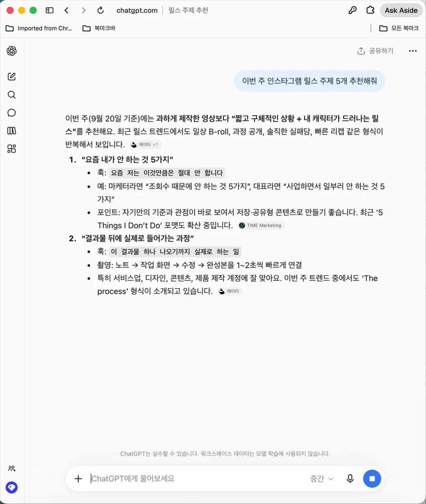
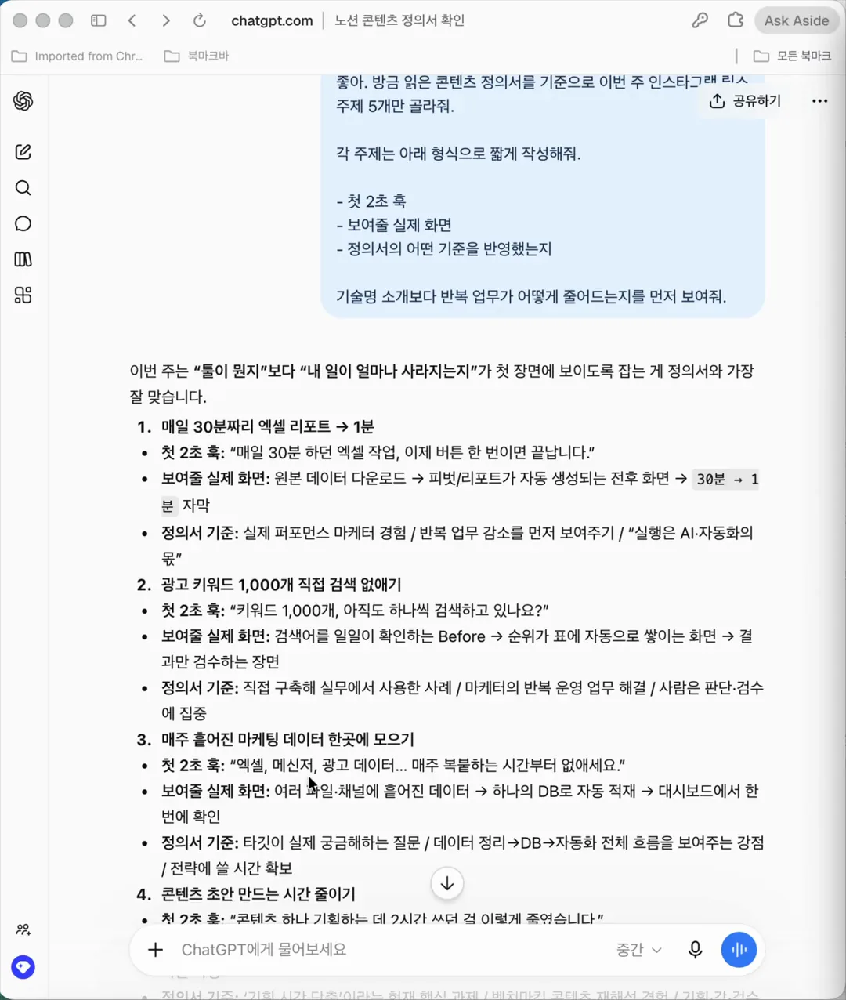
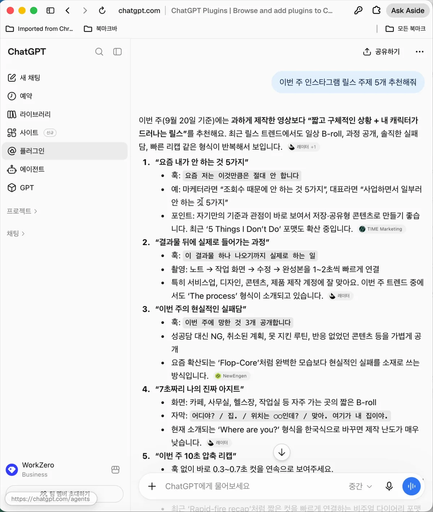
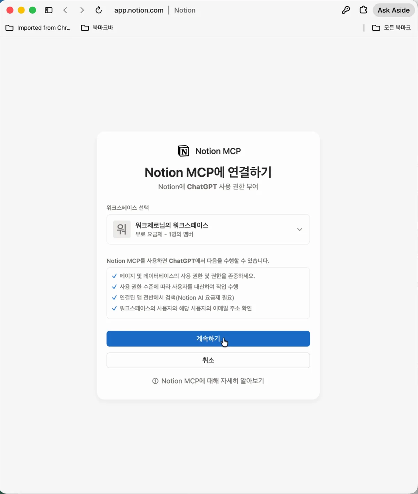

ChatGPT × 노션 연동법
"ChatGPT한테 아무리 길게 프롬프트를 쳐도 왜 자꾸 뻔한 답변만 나올까요?"
ChatGPT는 내 사업, 내 업무, 내 상황을 모르는 백지 상태에서 질문을 받기 때문입니다. 그래서 매번 인터넷의 흔한 유행어(남들의 기준)만 꺼내놓게 됩니다.
해결책은 간단합니다. 내 노션에 적어둔 업무/메모 문서 링크를 ChatGPT가 직접 읽게 만드는 것입니다.
👉 설치는 30초면 끝납니다. 하지만 '진짜 내 업무에 활용하는 법'은 완전히 다릅니다. 오늘 당장 써먹을 수 있는 핵심만 3분 안에 정리해 드립니다.
⚡ 바쁜 분들을 위한 3줄 요약 (30초 퀵스타트 공식)
이 글을 길게 읽으실 필요도 없습니다. 딱 3단계만 기억하세요:
- 연결 (30초): ChatGPT 사이드바에서 [플러그인 / Apps] ➔
Notion연동 클릭 - 복사 (5초): 내 노션에서 아무 문서나 열고 우측 상단 [링크 복사(Share Link)] 클릭
- 지시 (10초): ChatGPT 채팅창에 아래처럼 한 줄만 던지면 끝! > *
[노션링크] 이 문서 읽고, 내 기준에 맞춰서 [OOO] 해줘.*
Part 1. Before vs After: 챗봇과 에이전트의 결정적 차이
❌ Before: 노션 연동 전 (일반 챗봇)
- 질문: *"이번 주 인스타에서 반응 좋을 만한 릴스 주제 5개만 추천해줘."*
- 답변:
1. 요즘 내가 안 하는 5가지2. 성공한 사람들의 아침 루틴3. 퇴사 후 알게 된 현실...

문제점: 어디서나 볼 수 있는 흔한 밈일 뿐, 진짜 '내 일'과 '내 경험'이 담긴 알짜배기 답변은 절대 나오지 않습니다. 매번 내 상황을 20줄씩 복붙하는 것도 지치죠.
✅ After: 노션 연동 후 (내 문서를 읽는 전담 에이전트)
- 질문: *"내 노션 링크 읽고, 내 경험과 타깃에 맞춰 이번 주 릴스 주제 5개 뽑아줘."*
- 답변:
1. 매일 30분짜리 엑셀 리포트 ➔ 버튼 1회 1분 단축 노하우(반복 업무에 지친 마케터 타깃)2. 광고 키워드 1,000개 수동 순위 검색 자동화한 과정3. 매주 흩어진 마케팅 데이터 한곳에 모으기 (Airtable DB 구축 사례)

차이점: ChatGPT가 내 노션에 적힌 실제 업무 경험(엑셀 30분 ➔ 1분 단축)과 타깃(3~4년 차 마케터), 핵심 모토("방향은 사람, 실행은 AI")를 스스로 읽고 답변을 조합합니다.
단순 인턴 챗봇이 순식간에 내 업무 맥락을 100% 꿰뚫고 있는 똑똑한 대리로 진화합니다.
Part 2. 3분 완성! ChatGPT × 노션(MCP) 연동 3단계
프로그램을 설치하거나 코딩을 할 필요가 전혀 없습니다. 클릭 몇 번이면 끝납니다.
📌 1단계: ChatGPT 사이드바에서 [플러그인] 선택
- ChatGPT 웹(chatgpt.com) 또는 데스크톱 앱에 접속합니다.
- 좌측 사이드바 메뉴에서
플러그인 (또는 Apps / 연결된 앱)을 클릭합니다. - 스토어 검색창에
Notion을 검색합니다.

📌 2단계: Notion 연동 승인 & 워크스페이스 로그인
- Notion 카드에서
연결(Connect)을 누릅니다. - 노션 로그인 창이 뜨면, 평소 쓰시는 계정으로 로그인합니다.
- 연결할 워크스페이스를 지정하고
계속하기를 누르면 끝!

💡 보안 안심 팁 (사생활 보호)
"내 개인 일기나 회사 대외비 문서까지 ChatGPT가 다 보면 어쩌죠?"
걱정하지 마세요! 노션 연동 시 '특정 페이지나 전용 워크스페이스'만 선택해서 권한을 부여할 수 있습니다. ChatGPT와 협업할 전용 페이지 하나만 공유해 두시면 나머지 개인 문서는 100% 안전하게 격리됩니다.
📌 3단계: 1초 연결 검증 (테스트)
ChatGPT 채팅창에 아래처럼 짧게 입력해 보세요:
*"내 노션에서 최근 작성된 문서 목록 보여줘."*
상단에 노션 아이콘과 함께 문서 목록이 뜨면 성공입니다!
Part 3. 연동은 30초인데, 대체 어떤 문서를 읽혀야 할까요? (실전 레시피 3선)
거창한 매뉴얼을 새로 만들 필요가 없습니다. 지금 여러분의 노션에 있는 문서 중 하나를 골라 링크만 복사해 보세요.
🍳 레시피 1. [비즈니스 & 콘텐츠] 나만의 업무 경험 / 프로필 노트
*(영상 속 실제 사례)*
- 노션에 적어둘 내용: 거창할 필요 없이 빈 페이지에 [내가 하는 일 / 내가 겪은 시행착오나 성공 경험 / 내가 추구하는 모토] 딱 3줄만 적어두세요. > *(예: 릴스 영상 예시: 퍼포먼스 마케터 출신 / 엑셀 30분 걸리던 작업을 1분으로 자동화한 경험 / 모토: "방향은 사람, 실행은 AI")*
- ChatGPT에게 시킬 일: > *
[노션링크] 이 문서 읽고, 내 경험과 모토가 드러나도록 이번 주 인스타 카드뉴스/릴스 기획 5개 뽑아줘.* - 결과: 남들 다 하는 흔한 팁 대신, 진짜 내 경험이 담긴 독보적인 콘텐츠 기획이 1초 만에 나옵니다.
🍳 레시피 2. [업무 & 프로젝트] 프로젝트 기획서 / 진행 상황 메모
- 노션에 적어둘 내용: 현재 진행 중인 프로젝트 개요, 회의 메모, 이번 달 마감 일정 등
- ChatGPT에게 시킬 일: > *
[노션링크] 이 프로젝트 문서 읽고, 오늘 팀원들에게 공유할 슬랙(Slack) 공지문 3줄 요약본 작성해줘.* > *[노션링크] 이 내용 바탕으로 다음 주까지 마쳐야 할 우선순위 과제 3개만 추려줘.* - 결과: 문서를 일일이 설명할 필요 없이, 진행 맥락에 100% 들어맞는 커뮤니케이션 문서가 완성됩니다.
🍳 레시피 3. [학습 & 리서치] 스터디 노트 / 아티클 스크랩북
- 노션에 적어둘 내용: 평소 유익해서 스크랩해 둔 아티클, 책 요약, 강의 필기 노트 등
- ChatGPT에게 시킬 일: > *
[노션링크] 내가 정리해 둔 스터디 노트 읽고, 핵심 인사이트 3개와 내가 당장 실행해 볼 수 있는 액션 플랜 뽑아줘.* - 결과: 읽고 잊어버리던 노션 속 메모가 즉시 실행 가능한 나만의 액션 플랜으로 바뀝니다.
Part 4. [양방향 워크플로우] 읽기(Read) ➔ 쓰기/업데이트(Write) 마법의 1줄 프롬프트
ChatGPT가 문서를 읽는 것(Read)에서 끝나면 절반만 쓰는 것입니다. 대화로 완성된 결과물을 내 노션에 직접 새 페이지로 만들거나, 기존 문서에 차곡차곡 덧붙여(Write/Update) 보세요.
1️⃣ [읽기 (Read)] 내 노션 문서 읽히기
[내 노션 문서 링크 붙여넣기]
위 노션 문서 먼저 꼼꼼히 읽어줘.
문서에 적힌 내 기준과 맥락을 바탕으로 [원하는 작업]을 해줘.2️⃣ [새 페이지 만들기 (Create Page)] 작업 결과를 노션에 새 페이지로 저장
ChatGPT와 티키타카를 나누며 좋은 기획안이나 글이 완성되었다면, 복붙할 필요 없이 이렇게 명령하세요:
방금 완성한 내용을 내 노션 워크스페이스의 [저장하고 싶은 상위 페이지 이름] 하위에
"[오늘날짜] OOO 최종 기획안"이라는 제목의 새로운 페이지로 바로 생성해줘.👉 ChatGPT가 노션 MCP를 통해 내 워크스페이스에 클릭 가능한 새 노션 페이지를 즉시 생성해 줍니다.
3️⃣ [기존 문서에 덧붙이기 (Append / Update)] 기존 문서 맨 아래에 자동 기록
아까 읽혔던 프로젝트 문서나 일기장 아래에 회의록이나 결정 사항을 덧붙이고 싶을 때:
오늘 논의해서 결정된 핵심 실행 과제 3개를,
아까 읽었던 [기존 노션 페이지 이름] 문서 맨 아래에
'📌 추가된 실행 계획'이라는 토글 블록으로 덧붙여서 업데이트해줘.👉 기존 노션 문서를 열어둘 필요도 없이, 채팅창에서 내 노션 문서가 실시간으로 업데이트됩니다.
Part 5. 자주 묻는 질문 (FAQ)
Q1. 노션을 연결하면 내 개인 일기나 비밀 문서도 ChatGPT가 다 보나요?
- A. 전혀 그렇지 않습니다. 노션 MCP는 연결 시 사용자가 허용한 워크스페이스 및 페이지만 접근할 수 있으며, 사용자가 직접 링크를 주거나 명시적으로 지시한 페이지만 안전하게 호출합니다.
Q2. ChatGPT 무료 버전(Free)에서도 노션 연동이 가능한가요?
- A. 공식 플러그인/Apps 연동은 OpenAI 정책상 유료 플랜(Plus, Team, Pro)에서 지원됩니다.
- 💡 무료 사용자를 위한 꿀팁: 유료 구독이 없으시다면, 노션 페이지의 내용을 전체 복사(Ctrl+A)해서 ChatGPT 채팅창에 한 번 붙여넣고 *"이 문서를 내 기준 문서로 기억하고 답변해줘"*라고 입력하시면 거의 동일한 혜택을 누리실 수 있습니다!
Q3. 스마트폰 모바일 앱에서도 작동하나요?
- A. 네! PC 브라우저에서 최초 1회 연동을 완료해 두시면, 스마트폰의 공식 ChatGPT 모바일 앱에서도 노션 링크를 넣었을 때 똑같이 문서를 읽고 답변합니다.
"방향과 감, 기획과 검수는 사람의 몫. 실행은 AI의 몫입니다."
매번 똑같은 프롬프트를 치느라 시간을 낭비하지 마세요. 내 기준 문서를 노션에 두고, ChatGPT에게 읽히고 쓰게 만드는 순간 여러분만의 든든한 24시간 전담 AI 대리가 완성됩니다.
더 많은 실전 AI 워크플로우와 자동화 사례는 인스타그램 @work__zero에서 계속 확인하실 수 있습니다. 궁금한 점은 언제든 편하게 DM 남겨주세요!